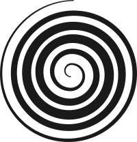
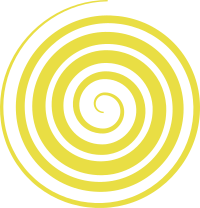
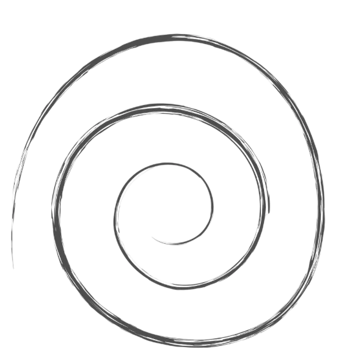
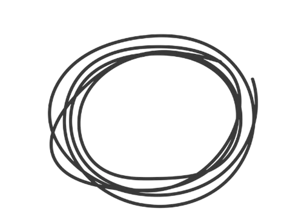

Tension
A constant state of alert, like a tightened inner knot.

is an ongoing self-initiated project that explores one emotion at a time through branding and UX.
It began as a way to reconnect with what I genuinely enjoy creating and to develop work that represents both my technical skills and personal interests.
Each exploration starts with research into the emotion itself, followed by the development of a visual identity through logo design, typography, colour, graphics and mockups.
The project then moves into UX, where the emotion becomes the foundation for a digital product or interactive experience. The goal is to investigate how emotions can influence visual language, interaction and the overall feeling of an experience.
It started with a notebook, a pen and a list of random emotions written on paper. From there, the idea evolved into a digital project, translating each emotion into a visual identity and an interactive experience.
It’s an emotion characterized by apprehension and somatic symptoms of tension in which an individual anticipates impending danger, catastrophe, or misfortune.
Anxiety is considered a future-oriented, long-acting response broadly focused on a diffuse threat, whereas fear is an appropriate, present-oriented and short-lived response to a clearly identifiable and specific threat.

A constant state of alert, like a tightened inner knot.
The same worries, over and over again.

It lives in the body too, a heavy, physical feeling.

A sense of not knowing what will happen.

One question leads to another, creating endless possible scenarios that become increasingly difficult to control. The mind keeps moving, but never reaches an answer.

Primary colour: #D0142A

#A1A1A1
#E9DE44
#E9E9E9The logo translates anxiety into a continuous loop: a spiral inspired by thoughts that keep circling back, making it difficult to find a way out.
The irregular black shapes form a cloud, the accumulation of thoughts surrounding the mind, while the red core represents the emotional explosion within: the most intense, immediate state of anxiety held at the centre.




Tusker Grotesk · 2600 SemiBold
Tusker Grotesk
ABCDEFGHIJKLMNOPQRSTUVWXYZ
abcdefghijklmnopqrstuvwxyz
1234567890@#$%&*()
I KNOW A GHOST · Regular
I KNOW A GHOST
ABCDEFGHIJKLMNOPQRSTUVWXYZ
abcdefghijklmnopqrstuvwxyz
1234567890@#$%&*()


I mapped the experience starting from the iPhone lock screen and continuing through the complete chat interaction.
The flow follows each step of the conversation, from opening the notification and entering the chat to writing messages and receiving guidance throughout the experience.
Before moving into Figma, I went back to pen and paper. Sketching the first wireframes helped me give shape to the idea, follow the conversation step by step and understand how each screen should lead naturally into the next.
It was a quick and instinctive way to explore the experience before defining its digital form.

The experience begins on the iPhone lock screen, where Anxiety appears as a notification. Opening it leads into a chat in which the emotion takes on a voice, responding through doubts, repeated questions and escalating “what ifs”.
I chose a chat interface because anxious thoughts can feel like an ongoing conversation that is difficult to silence. By turning Anxiety into the other participant, the prototype gives a visible voice to thoughts that would normally remain internal. Familiar interactions gradually become repetitive and intrusive, allowing the user to experience the tension rather than simply read about it.
Rather than offering advice or a solution, the interaction makes the anxious loop visible. The user is not speaking to a therapist or an assistant, but moving through an internal conversation between themselves and their anxiety.